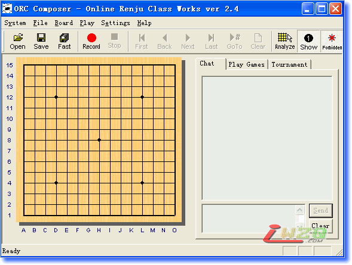
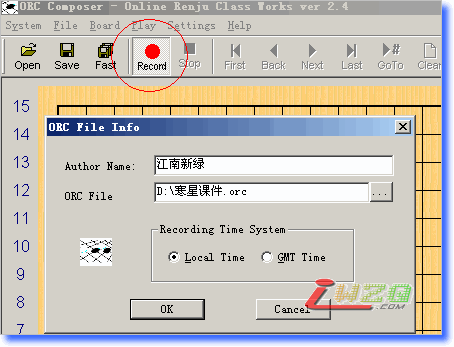

RenjuClassWorks2.4
#1 RenjuClassWorks2.4 作者：有志青年 发表时间：2007-10-29 16:16:18

地址1：点击下载
地址2：点击下载
#2 RenjuClassWorks2.4使用指南【江南新绿】 作者：有志青年 发表时间：2007-10-29 16:26:13
使用简介
图一
对图1做个说明：
1．左上角的，连接教室，可以听课的
2．右上角的，观看课件
3．左下角的，录制课件。
4．右下角的，离开
1.Online Renju Class （Virtual classroom)
如何去听课 详情请点击 ,不过都是英文的,下面摘录一点,翻译成中文.如果你第一次去，最好早点到，用过客登陆．有时候服务器地址会临时变化，但网站也许没有更新，如果去不了．也请回复一个在下面．
ONLINE LESSONS
上课时间:
在格林威治时间周六下午１点半,也就是北京时间周六晚上21:30分,
LOGIN
登陆
Server: classroom.compute.com.tw
User ID: Your Renjuclass user name
password: Your user password
用户id：你在教室的名字
密码：你使用的密码（第一次去，请你选择过客登陆（guest logon）吧，早点到，觉得喜欢可以去ando教室申请用户名和密码，不过要做作业的哦．）
如何自己做录像：
点击上图左下角的Online Renju Class （Composer)
进入之后，找到Record按纽（红色的圆，非常醒目），

点开之后把，录制的作者名字和录制完后文件存放的位置都改一下，比如图上，作者为江南新绿，文件放在d盘下面．文件名字为，寒星课件.orc，录制的过程中你可以在右下角输入文字
当录制完毕之后，点击Record按纽右边的stop按钮．课件的观看点击下图右上角的Viewer
有志注：
阅读orc课件推荐使用本站的orc阅读器，操作更简单。
相关内容见：ORC阅读器